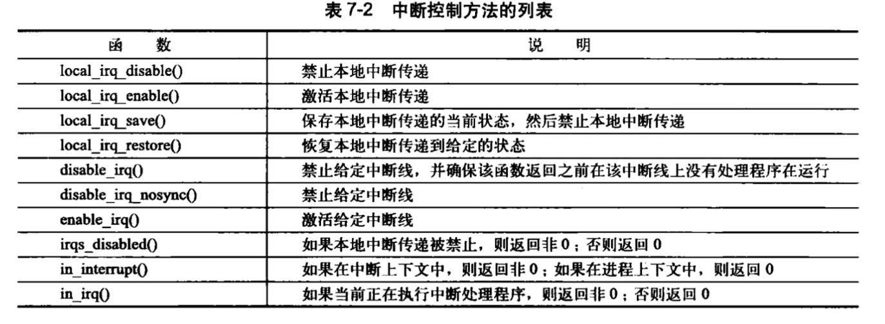
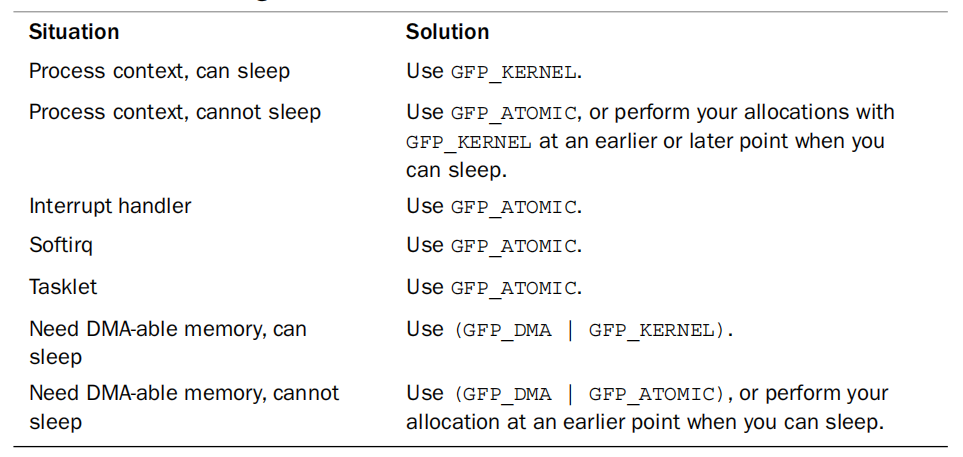

《Linux内核设计与实现》笔记
这不是一个很好的笔记。只是记录了一些我之前不知道或不明确的东西。很多我知道的重点没有记下来。
第一二章 简介
我们可以将每个处理器在任何指定时间点上的活动概括为以下三者之一：
- 运行于用户空间，执行用户进程。
- 运行于内核空间，处于进程上下文，代表某个特定进程的执行。
- 运行于内核空间，处于中断上下文，与任何进程无关，处理某个特定的中断。
使用 GNU C 编译器。
内核中发生的内存错误会导致oops。内核中的内存不分页。
内核栈的大小是固定且不大的。这个可以在编译的时候进行配置。
同步和并发
- Linux是抢占多任务操作系统，内核的进程调度程序对进程进行调度，内核必须与这些进程同步。
- Linux支持SMP（对称多处理器系统）。所以如果没有适当保护，同时在两个及以上处理器上执行的内核代码很可能会同时访问共享的一个资源。
- 中断是异步到来的，如果不加适当的保护，中断完全有可能在代码访问资源的时候到来，访问同一段资源。
- Linux内核可以抢占，如果不加上适当的保护，内核中一段正在执行的代码可能会被另一端代码抢占，从而有可能导致几段代码同时访问相同的资源。
第三章 进程
进程列表存放在一个双向循环列表中。
Linux通过Slab分配器分配task_struct结构，达到对象复用和缓存着色的目的。
在寄存器不多的架构，没有多余的寄存器专门存储task_struct的地址。栈尾的thread_info结构，通过偏移间接地查找task_struct结构。可以看current宏在不同架构上的实现。
进程的创建，fork是我们最熟悉的系统调用，还有vfork和clone，不过其实最后都是调用clone。对于内核来说进程=线程。进程exit之后，释放**除了内核栈、thread_info，task_struct**之外的全部资源。这些没有释放的资源交给父进程释放，如果父进程已经死了就交给init进程。
第四章 进程调度
第五章 系统调用
关于Unix的接口设计有一句格言“提供机制而不是策略”。换句话说，Unix的系统调用抽象出了用于完成某种确定的目的的函数。至于这些函数怎么用完全不需要内核去关心。
系统调用在出现错误的时候C库会把错误码写入errno"全局变量"。通过调用perror库函数，可以把该变量翻译成用户可以理解的错误字符串。
系统调用必须仔细检査它们所有的参数是否合法有效。系统调用在内核空间执行，如果任由用户将不合法的输入传递给内核，那么系统的安全和稳定将面临极大的考验。最重要的一种检査就是检査用户提供的指针是否有效。在接收一个用户空间的指针之前，内核必须保证：
- 指针指向的内存区域属于用户空间。进程决不能哄骗内核去读内核空间的数据。
- 指针指向的内存区域在进程的地址空间里。进程决不能哄骗内核去读其他进程的数据。
- 如果是读，该内存应被标记为可读；如果是写，该内存应被标记为可写；如果是可执行，该内存被标记为可执行。进程决不能绕过内存访问限制。
内核提供了两个方法来完成必须的检査和内核空间与用户空间之间数据的来回拷贝。注意，内核无论何时都不能轻率地接受来自用户空间的指针！这两个方法中必须经常有一个被使用。为了向用户空间写入数据，内核提供了 copy_to_user()。它需要三个参数。第一个参数是进程空间中的目的内存地址，第二个是内核空间内的源地址，最后一个参数是需要拷贝的数据长度(字节数)。为了从用户空间读取数据，内核提供了 copy_from_user，它和copy_to_user()相似。该函数把第二个参数指定的位置上的数据拷贝到第一个参数指定的位置上，拷贝的数据长度由第三个参数决定。如果执行失败，这两个函数返回的都是没能完成拷贝的数据的字节数。如果成功，则返回0。当出现上述错误时，系统调用返回-EFAULT。注意，copy_to_user()和copy_from_user()都有可能引起阻塞。当包含用户数据的页被换出到硬盘上而不是在物理内存上的时候，这种情况就会发生。此时，进程就会休眠，直到缺页处理程序将该页从硬盘重新换回物理内存。
第六章 内核数据结构
链表
相比普遍的链表实现方式（包括前面章节描述的通用方法），Linux内核的实现可以说独树一帜，它不是将数据结构塞入链表，而是将链表节点塞入数据结构。链表代码在头文件＜linux/list.h＞中声明，其数据结构很简单
struct list_head {
struct list_head *next;
struct list_head *prev;
}
关键在于理解list_head是怎么使用的，有一系列宏魔法。主要分成操作链表（复杂度为$O(1)$）和遍历链表（复杂度为$O(n)$）。Linux提供了很多链表操作方法——几乎是你所能想到的所有访问和操作链表方法，所有这些方法都可在头文件＜linux/list.h＞中找到。
队列
Linux内核通用队列实现称为kfifo。它实现在文件kemel/kfifo.c中，声明在文件＜linux/kfifo.h＞中。
使用kfifo前，首先必须对它进行定义和初始化。和多数内核对象一样，有动态或者静态方法供你选择。动态方法更为普遍，有kfifo_alloc和kfifo_init两种。推入数据到队列需要通过kfifo_in()方法完成，摘取数据则需要通过函数kfifo_out()完成。不过如果仅仅想“偷窥”队列中的数据，而不真想删除它，你可以使用kfifo_out_peek()方法。撤销一个使用kfifo_alloc()分配的队列，调用kfifo_free()。
映射
Linux内核提供了简单、有效的映射数据结构。但是它并非一个通用的映射。因为它的目标是：映射一个唯一的标识数(UID)到一个指针。idr数据结构用于映射用户空间的UID,比如将inotify_watch的描述符或者POSIX的定时器ID映射到内核中相关联的数据结构上，如inotify_watch或者k_itimer结构体。其命名仍然沿袭了内核中有些含混不清的命名体系，这个映射被命名为idr。
树
Linux实现的红黑树称为rbtree。其定义在文件lib/rbtree.c中，声明在文件<linux/rbtree.h>中。除了一定的优化外，Linux的rbtree类似于前面所描述的经典红黑树，即保持了平衡性，所以插入效率和树中节点数目呈对数关系。
rbtree的实现并没有提供搜索和插入例程，这些例程希望由rbtree的用户自己定义。这是因为C语言不大容易进行泛型编程，同时Linux内核开发者们相信最有效的搜索和插入方法需要每个用户自己去实现。你可以使用rbtree提供的辅助函数，但你自己要实现比较操作算子。
第七章 中断
中断本质上是一种特殊的电信号，由硬件设备发向处理器。处理器接收到中断后，会马上向操作系统反映此信号的到来，然后就由操作系统负责处理这些新到来的数据。硬件设备生成中断的时候并不考虑与处理器的时钟同换句话说就是中断随时可以产生。因此，内核随时可能因为新到来的中断而被打断。不同的设备对应的中断不同，而每个中断都通过一个唯一的数字标志。这些中断值通常被称为中断请求（IRQ）线。每个IRQ线都会被关联一个数值量。
中断可能随时发生，因此中断处理程序也就随时可能执行。所以必须保证中断处理程序能够快速执行，这样才能保证尽可能快地恢复中断代码的执行。
中断处理程序与其他内核函数的真正区别在于，中断处理程序是被内核调用来响应中断的，而它们运行于我们称之为中断上下文的特殊上下文中。
中断上下文和进程并没有什么瓜葛。与current宏也是不相干的(尽管它会指向被中断的进程)。因为没有后备进程，所以中断上下文不可以睡眠，否则又怎能再对它重新调度呢？因此，不能从中断上下文中调用某些函数。如果一个函数可能睡眠，就不能在你的中断处理程序中使用它。
有一些函数可以用来禁用/启用中断。

中断处理程序
驱动程序可以通过request_irq()函数注册一个中断处理程序。注意，request_irq()函数可能会睡眠，因此，不能在中断上下文或其他不允许阻塞的代码中调用该函数。
request_irq(unsigned int irq, irq_handler_t handler, unsigned long flags,
const char *name, void *dev)
- 第一个参数irq表示要分配的中断号。对某些设备，如传统PC设备上的系统时钟或键盘，这个值通常是预先确定的。而对于大多数其他设备来说，这个值要么是可以通过探测获取，要么可以通过编程动态确定。
- 第二个参数handler是一个指针，指向处理这个中断的实际中断处理程序。只要操作系统一接收到中断，该函数就被调用。
- 第五个参数dev用于共享中断线。当一个中断处理程序需要释放时（稍后讨论），dev将提供唯一的标志信息（cookie）,以便从共享中断线的诸多中断处理程序中删除指定的那一个。
卸载驱动程序时，需要注销相应的中断处理程序，并释放中断线。上述动作需要调用：
void free_irq(unsigned int irq, void *dev)
如果指定的中断线不是共享的，那么，该函数删除处理程序的同时将禁用这条中断线。如果中断线是共享的，则仅删除dev所对应的处理程序，而这条中断线本身只有在删除了最后一个处理程序时才会被禁用。
以下是一个中断处理程序声明：
static irqreturn_t intr_handler(int irq, void *dev)
- 第一个参数irq就是这个处理程序要响应的中断的中断号。如今，这个参数已经没有太大用处了。
- 第二个参数dev是一个通用指针，它与在中断处理程序注册时传递给
request_irq()的参数dev必须一致。如果该值有唯一确定性(这样做是为了能支持共享)，那么它就相当于一个cookie，可以用来区分共享同一中断处理程序的多个设备。 - 中断处理程序的返回值是一个特殊类型：
irqreturn_t。中断处理程序可能返回两个特殊的值：IRQ_NONE和IRQ_HANDLED。当中断处理程序检测到一个中断，但该中断对应的设备并不是在注册处理函数期间指定的产生源时，返回IRQ_NONE；当中断处理程序被正确调用，且确实是它所对应的设备产生了中断时，返回IRQ_HANDLED。
内核接收一个中断后，它将依次调用在该中断线上注册的每一个处理程序。因此，一个处理程序必须知道它是否应该为这个中断负责（dev参数）。如果与它相关的设备并没有产生中断，那么处理程序应该立即退出。
编写中断处理程序需要注意的事情：中断处理程序运行在中断上下文。Linux中的中断处理程序是无须重入的。当一个给定的中断处理程序正在执行时，相应的中断线在所有处理器上都会被屏蔽掉，以防止在同一中断线上接收另一个新的中断。通常情况下，所有其他的中断都是打开的，所以这些不同中断线上的其他中断都能被处理，但当前中断线总是被禁止的。所有的中断处理程序必须尽可能的迅速。尽量把工作从中断处理程序中分离出来，放在下半部来执行，因为下半部可以在更合适的时间运行。为了应对栈大小的减少，中断处理程序拥有了自己的栈，每个处理器一个，大小为一页。这个栈就称为中断栈，你的中断处理程序不必关心栈如何设置，或者内核栈的大小是多少。总而言之，尽量节约内核栈空间。
第八章 中断下半部
下半部的任务就是执行与中断处理密切相关但中断处理程序本身不执行的工作。在理想的情况下，最好是中断处理程序将所有工作都交给下半部分执行，因为我们希望在中断处理程序中完成的工作越少越好（也就是越快越好）。我们期望中断处理程序能够尽可能快地返回。
但是，中断处理程序注定要完成一部分工作。例如，中断处理程序几乎都需要通过操作硬件对中断的到达进行确认，有时它还会从硬件拷贝数据。因为这些工作对时间非常敏感，所以只能靠中断处理程序自己去完成。
- 如果一个任务对时间非常敏感，将其放在中断处理程序中执行。
- 如果一个任务和硬件相关，将其放在中断处理程序中执行。
- 如果一个任务要保证不被其他中断（特别是相同的中断）打断，将其放在中断处理程序中执行。
- 其他所有任务，考虑放置在下半部执行。
softirq
一个注册的软中断必须在被标记后才会执行。这被称作触发软中断(raising the softirq )。通常，中断处理程序会在返回前标记它的软中断，使其在稍后被执行。于是，在合适的时刻，该软中断就会运行。
tasklet :star:
tasklet是利用软中断实现的一种下半部机制。我们之前提到过，它和进程没有任何关系。tasklet和软中断在本质上很相似，行为表现也相近，但是，它的接口更简单，锁保护也要求较低。大多数情况下用tasklet效果都不错，而且它们还非常容易使用。因为tasklet是通过软中断实现的，所以它们本身也是软中断。
第九章 内核同步介绍
如果多个执行线程同时访问和操作数据，就可能发生各线程之间互相覆盖共享数据的情况，是造成系统不稳定的隐患，而且这种错误难以跟踪和调试。
从2.0开始，内核开始支持对称个临界区多处理器。在这之前，只有中断发生或者内核代码明确请求重新调度执行另一个任务的时候，数据才可能被并发访问。现在，运行在两个不同处理器上的内核代码完全可能在同一时刻并发访问共享数据。2.6开始，Linux内核发展成抢占式内核，调度程序可以在任何时刻抢占正在运行的内核代码，重新调度其他的进程执行。
临界区就是访问和操作共享数据的代码段。如果两个程序可能在一个临界区中同时执行，这就是竞争条件race condition。避免竞争条件被称为同步synchronization。
同步的关键是找出哪些数据需要保护。要给数据而不是代码加锁。问自己下面的问题：
- 这个数据是不是全局的？除了当前线程外其他线程能不能访问他？
- 这个数据会不会在进程上下文和中断上下文共享？它是不是要在两个不同的中断处理程序中共享？
- 进程在访问数据的时候可不可以被抢占？被调度的新进程会不会访问同一数据？
- 当前进程会不会睡眠（阻塞）在某些资源上？如果会，他会让共享数据处于何种状态？
- 如果这个函数又在另一个处理器上被调度会发生什么呢？
- 如何确保代码远离并发威胁？
如何避免死锁？有一些简单的规则：
- 按顺序加锁。如果需要嵌套的使用多个锁，必须按照相同的顺序去获取他们，在代码使用锁的地方，对锁的获取顺序加上注释是一个好习惯。
- 设计应该尽量简单。
- 防止发生饥饿。代码的执行是否一定会正常结束？
- 不要重复请求同一个锁。
第十章 内核同步方法
Linux内核提供了一组相当完备的同步方法。
atomic
原子操作是其他同步方法的基石。针对整数的原子操作只能对atomic_t类型的数据进行处理，定义在/include/linux/types.h中。还有针对位的原子操作。
typedef struct {
int counter;
} atomic_t;
使用原子整型操作需要的声明在/include/linux/atomic。一些体系结构会提供一些额外的原子操作方法，比如x86。
atomic_t v;
atomic_set(&v, 4);
atomic_add(2, &v);
atomic_inc(&v);
int a = atomic_read(&v);
原子整数操作最常见的用途是实现计数器。
spin lock
自旋锁最多只能被一个可执行线程持有。如果一个执行线程试图获得一个已经被持有的自旋锁，那么线程就会进行busy waiting，直到锁重新可用。如果锁没有被争用，那么请求锁的执行线程便能立刻得到它。自旋锁可以防止多于一个的线程同时进入临界区。自旋锁不应该被长时间持有，用于短时间内进行轻量级加锁。使用自旋锁需要的声明定在/include/linux/spinlock_types.h。
自旋锁可以用在中断处理程序中，不能使用信号量，因为他们会导致睡眠。在中断处理程序中使用自旋锁时，一定要在获取锁之前，先禁止本地中断。否则中断处理程序可能会打断正持有锁的内核代码，就死锁了。内核提供了禁止中断同时请求锁的接口spin_lock_irqsave。相应的spin_unlock_irqrestore。
要注意，锁的是代码（临界区），真正要保护的是数据。
read-write lock
Linux内核提供了专门的读-写锁 。这种自旋为读和写分别提供了不同的锁。一个或多个 任务可以并发地持有读者锁。相反，用于写的锁最多只能被一个写任务持有，而且此时不能有并发的读操作。用于读写明确区分的场景，并且有利于读者，写者容易饥饿。
使用读写锁需要的定义声明在/include/linux/rwlock.h。
semaphore
信号量是一种睡眠锁。如果有一个任务试图获得一个不可用的信号量时，信号量就会将其推进一个等待队列，然后让其睡眠。当持有的信号量可用后，处于等待队列中的那个任务将被唤醒，并获得该信号量。
- 争用信号量的进程在等待锁重新变成可用的时候会睡眠，所以信号量适合用于锁会被长时间持有的情况。反之，如果锁被短时间持有，使用信号量就不太合适。
- 在中断上下文不可以睡眠，所以不可以使用信号量。
- 占用信号量的同时不要占用自旋锁。因为在等待信号量的时候可能会睡眠，而持有自旋锁的时候不应该睡眠。
- 往往在需要和用户空间同步的时候，你的代码会需要睡眠，这时信号量就是唯一的选择。因为持有信号量的时候可以睡眠。
使用信号量需要的定义声明在/include/linux/semaphore.h。
rw_semaphore
读写信号量。
mutex
mutex和信号量计数为1的semaphore表现的行为一致。
mutex上锁者必须负责给其再解锁——你不能在一个上下文中锁定一个mutex，而在另一个上下文中它解锁。这个限制使得mutex不适合内核同用户空间复杂的同步场景。mutex只能通过官方API管理，不可以被拷贝、手动初始化或者重复初始化。持有mutex的时候进程不可以退出。当打开内核配置选项CONFIG_DEBUG_MUTEXES后，就会有多种检测来确保这些（还有别的）约束得以遵守。
completion
如果内核中一个任务需要发出信号，通知另一任务发生了某个特定时间，利用completion是让两个任务得以同步的简单方法。（我之前用了wait_queue，看了一下completion也是用了wait相关的数据结构）
BKL
新代码中不再使用BKL
禁止抢占
顺序和屏障
硬件或者编译器可能会对读写进行重新排序，比如
a = 1;
b = 2;
可能在a存放新值之前就在b存放新值。
十一章 定时器和时间管理
定义在/include/linux/jiffies.h中的jiffles。
extern u64 __cacheline_aligned_in_smp jiffies_64;
extern unsigned long volatile __cacheline_aligned_in_smp __jiffy_arch_data jiffies;
实时时钟 (RTC)是 来持久存放系统时间的设备。即便系统关闭后，它也可以靠主板上微型电池提供的电力保持系统的计时。在PC体系结构中 RTC和CMOS集成在一起，且RTC的运行和BIOS保存设置都是通过同一个电池供电的。
在x86体系结构中 主要采用可编程中断时钟(PIT) 。
定时器的使用很简单，我们只需要执行一个初始化工作，设置超时时间，指定超时发生后执行的函数，然后激活定时器。指定的函数将在定时器到期时自动执行。定时器由结构timer_list表示，定义在文件/include/linux/timer.h中。使用定时器并不需要深入了解该数据结构。事实上深入该结构反会使你的代码不能保证对可能发生的变化提供支持。
不要用定时器实现任何硬实时任务。一般来说定时器在超时后会马上执行，但是也可以推迟（但是绝对不会提前）。
第十二章 内存管理
在内存中分配内存比在用户控件要复杂的多。
内核把物理页作为内存管理的基本单位。内核用struct page表示系统中每个物理页。
必须要理解的一点是page结构与物理页相关，而并非与虚拟页相关。因此，该结构对页的描述只是短暂的。即使页中所包含的数据继续存在，由于交换等原因，他们可能也不再和同一个page结构关联。内核仅仅用这个数据结构来描述当前时刻在物理页中存放的东西。这种数据结构的目的在于描述物理内存本身，而不是描述包含在其中的数据。
由于硬件的限制，内核并不能对所有的页一视同仁，所以内核把页划分成不同的区zone，内核使用zone对具有相似特性的page进行分组。
分配页
/* 分配 2^order 个 pages，返回第一页的地址 */
unsigned long __get_free_pages(gfp_t gfp_mask, usigned int order);
/* 分配 2^order 个 page，返回第一页struct page* */
struct page* alloc_pages(gfp_t gfp_mask, usigned int order);
/* 分配 1 个 pages，返回第一页的逻辑地址 */
unsigned long __get_free_page(gfp_t gfp_mask, usigned int order);
/* 分配 1 个 page，返回第一页struct page* */
struct page* alloc_page(gfp_t gfp_mask);
/* 分配 1 个 page，数据全部填充成0。返回给用户空间的页需要填充为0 */
unsigned long get_zeroed_page(unsigned int gfp_mask);
/* 把 page 转换成逻辑地址 */
void* page_address(struct page* page);
释放页
void __free_pages(struct page*page, unsigned int order);
void free_pages(unsigned long addr,unsigned int order);
void free_page(unsigned long addr);
kmalloc
之前介绍的接口，对于需要分配整个页的情况可能是比kmalloc更好的选择。但是对于大多数的内核分配来说，kmalloc用得更多。它返回一个指向内存块的指针，内存块至少有size大小，分配的内存在物理上是连续的。在出错时，它返回NULL，也就意味着没有足够的内存可用了。
static __always_inline __alloc_size(1)
void *kmalloc(size_t size, gfp_t flags);
gfp_t flag常用的宏，不知道有没有过时。在绝大多数代码中，我们只需要用到GFP_KERNEL和GFP_ATOMIC。

和kmalloc配套使用的是kfree
void kfree(const void *objp);
vmalloc
vmalloc类似kmalloc，但是**vmalloc分配的虚拟地址是连续的，物理地址无需连续，这类似于用户空间分配函数malloc。而kmalloc保证物理地址和虚拟地址都是连续的**。
void *vmalloc(unsigned long size) __alloc_size(1);
void vfree(const void *addr);
出于性能的考虑，很多内核代码即使不需要物理地址连续的内存，也使用kmalloc。vmalloc只在不得已时才会使用——比如获得大块内存时。
slab
分配和释放数据结构是内核中最普遍的操作之一。为了便于数据的频繁分配和挥手，编程人员常常会用到空闲链表。当代码需要一个新的数据结构时，可以从空闲链表中抓取一个而不需要分配内存，再把数据放进去。当不需要这个数据结构的实例时，把它放回空闲链表而不是释放它。但是空闲链表面临的主要问题是不能全局控制，让不同的空闲链表统筹操作，释放内存出来使用。所以，Linux提供了slab，通用的数据结构缓存层。
struct kmem_cache *kmem_cache_create(const char *name, unsigned int size,
unsigned int align, slab_flags_t flags,
void (*ctor)(void *));
void kmem_cache_destroy(struct kmem_cache *s);
void *kmem_cache_alloc(struct kmem_cache *s, gfp_t flags) __assume_slab_alignment __malloc;
void kmem_cache_free(struct kmem_cache *s, void *objp);
栈
内核栈小且固定。所以不要在栈上进行大量的静态分配（大型数组或大型结构体），否则栈溢出会覆盖掉邻接堆栈末端的东西，thread_info和其他的数据。
第十三章 虚拟文件系统
Inode对象包含了内核在操作文件或目录时需要的全部信息。对于Unix风格的文件系统来说这些信息可以从磁盘inode节点直接读入，但是如果磁盘上文件系统没有inode，也需要从中提取信息。也就是说，无论如何inode都会在内存中创立。
书介绍了四大数据结构的全部的接口，可以作为参考。
还介绍了和进程相关的数据结构
file_struct，主要是存储打开的文件，fdt。fs_struct，这里存储了root根目录路径，pwd当前工作目录的路径，in_exec当前正在执行的文件namespace，他使得每一个进程在系统中都看到唯一的安装文件系统，不仅是唯一的根目录，而且是唯一的文件系统层次结构。
第十四章 块I/O层
能够随机（不按顺序）访问固定大小的数据片的设备称为块设备，比如硬盘。按照字符流的顺序被有序访问的称为字符设备，比如串口和键盘。
设备最小的寻址单元是扇区sector。不过内核中磁盘操作的基本单元是块block。一般来说sector是512B的大小，不过也有不同的。block的大小要求是sector的2的整数倍而小于page size（不确定现在的内核是否还有这个限制），所以一般是512B, 1KB, 4KB。
当一个块被调入内存时，也就是 在读入后或等待写出时，它存储在一个缓冲区中。用一个buffer_head结构体存储缓冲区的元信息(他曾今用来在一个page中映射一个block，但是现在我们使用bio，而将buffer_head用来extracting block mappings)。bio结构体代表了正在或等待的以segment link list形式组织的块IO操作。
内核会对IO进行调度。
十五章 进程地址空间
进程地址空间指的就是每个用户空间进程看到的内存。内核使用mm_struct描述进程的地址空间，定义在 /include/linux/mm_types.h中。一些有趣的字段
/* list of VMAs */
struct vm_area_struct *mmap;
/* rb tree of VMAs */
struct rb_root mm_rb;
/* 代码段，数据段 */
unsigned long start_code, end_code, start_data, end_data;
/* 栈，堆 */
unsigned long start_brk, brk, start_stack;
/* 参数，环境变量 */
unsigned long arg_start, arg_end, env_start, env_end;
mmap作为链表，利于简单高效的遍历所有元素，而mm_rb作为红黑树，方便搜索指定元素。current->mm指向当前进程的内存描述符，fork()函数利用copy_mm复制父进程的内存描述符。通常每个进程都有唯一的mm_struct，即唯一的进程地址空间，如果父进程希望和其他子进程共享地址空间，可以在clone()时，设置CLONE_VM标识，这样就是线程了。
十六章 页高速缓存和页回写
页高速缓存cache是Linux内核实现磁盘缓存的方式。他用来减少对磁盘的IO操作，将物理内存作为磁盘的cache。
address_space用来管理新对象缓存项和页IO操作。
十七章 模块与设备
设备被分为：
- 块设备
- 字符设备
- 网络设备：打破了一切皆文件的原则，可以通过套接字API这样的特殊接口来访问。
设备模型的核心部分是kobject。sysfs是处于内存中的一个虚拟文件系统，他为我们提供了kobject对象层次结构的视图。
BUG_ON()有点类似assert!，提供断言的作用。
十八章 调试
printk可以设置打印频率，否则可能会因为太多的打印让系统负载过高。
static unsigned long prev_jiffy = jiffies;/* 频率限制 */
if (time_after(jiffies, prev_jiffy + 2*HZ)) {
prev_jiffy = jiffies;
printk(KERN_ERR "blah blah blah\n")
}
git的二分查找
git bisect
十九章 移植性
- int的长度，在Linux当前支持的体系结构中都是32位的。（待考证）
- short的长度，在Linux当前支持的体系结构中都是16位的。（待考证）
- 不要假设指针和long的长度。
有一些用typedef定义的类型，请不要将该类型转换成C标准类型，当做一个不知道长度的类型就好。
对于一些 知道明确长度的变量，用
| 类型 | 描述 |
|---|---|
| s8 | 带符号字节 |
| u8 | 无符号字节 |
| s16 | 带符号16位整数 |
| u16 | 无符号16位整数 |
| s32 | 带符号32位整数 |
| u32 | 无符号32位整数 |
| s64 | 带符号64位整数 |
| u64 | 无符号64位整数 |
注意SMP，内核抢占，高端内存的使用。
- http://www.lwn.net/ Linux新闻周刊
- http://www.kemel.org 内核代码库的官方站点
- http://kemelnewbies.org/
编码风格，使用8个字符长度的制表符缩进。K&R风格。每行不超过80个字符，用下面的命令可以使用Linux编码风格。
indent -kr -i8 -ts8 -sob -180 -ss -bs -psi <file>
注释规范：Documentation/kemel-doc-nano-HOWTO.txt
多用现成的东西，不要重复造轮子。